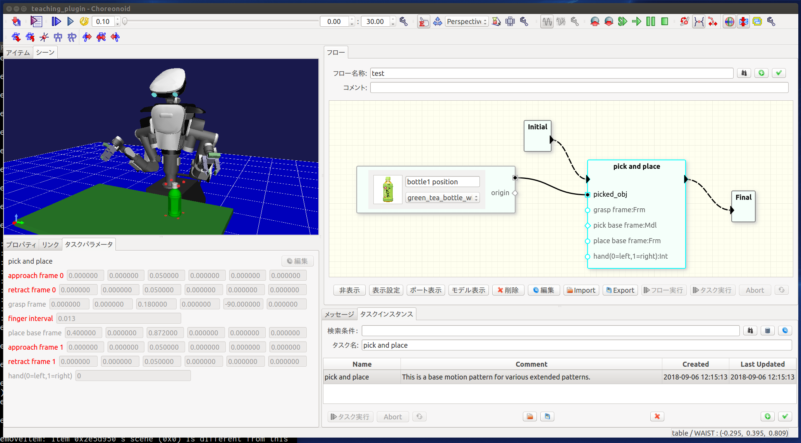

Welcome to teachingPlugin (2019.07.22)
はじめに
teachingPluginはロボットの教示ソフトウェアの一種です。あらかじめ設計されたロボットの動作パターンを組合わせることで、より長い作業手順を記述します。3Dモデルを動作パターンに紐付けることで、3Dモデルの位置や3Dモデル上に定義した座標系を利用して動作パターンを調整することができます。また、3Dモデルに加えて画像やテキスト等のデータも合わせて利用することで、ユーザが動作パターンの目的を理解し、再利用しやすい形でのデータ管理を可能とします。
本ソフトウェアは、産総研で開発されたロボット用統合GUIソフトウェアであるChoreonoidのプラグインとして動作します。

インストールと実行
動作環境
- Ubuntu18.04LTS
- Choreonoid 1.7.0
環境構築
Choreonoid
$ wget https://choreonoid.org/_downloads/choreonoid-1.7.0.zip $ unzip choreonoid-1.7.0.zip
SQLite
$ sudo apt install libqt5sql5-sqlite libsqlite3-0 libsqlite3-dev sqlite3
teachingPluginとサンプルコントローラのセット
$ cd $CHOREONOID_DIR/ext # $CHOREONOID_DIRはChoreonoidを展開したディレクトリ $ git clone -b dev17 https://bitbucket.org/hanai/teachingplugin.git teachingPlugin $ git clone https://bitbucket.org/hanai/samplehirocontroller2plugin.git SampleHiroController2Plugin
コンパイル
$ cd $CHOREONOID_DIR $ mkdir build $ cd build $ ccmake .. # BUILD_TEACHING_PLUGIN=ON, BUILD_SAMPLE_HIROCONTROLLER=ONにする（デフォルトでON） $ make # make -j8などの並列コンパイルやccacheの利用などで時間短縮しましょう。
サンプルデータの取得
サンプルデータを$CHOREONOID_DIR/ext/teachingPlugin/share/projectにteachingDB.sqlite3という名前でダウンロードします。
実行
$ cd $CHOREONOID_DIR/ext/teachingPlugin/share/project $ $CHOREONOID_DIR/build/bin/choreonoid teaching_plugin.cnoid
ライセンス
本ソフトウェアはオープンソースソフトウェアとして開発されており、そのライセンスはMITライセンスとしております。